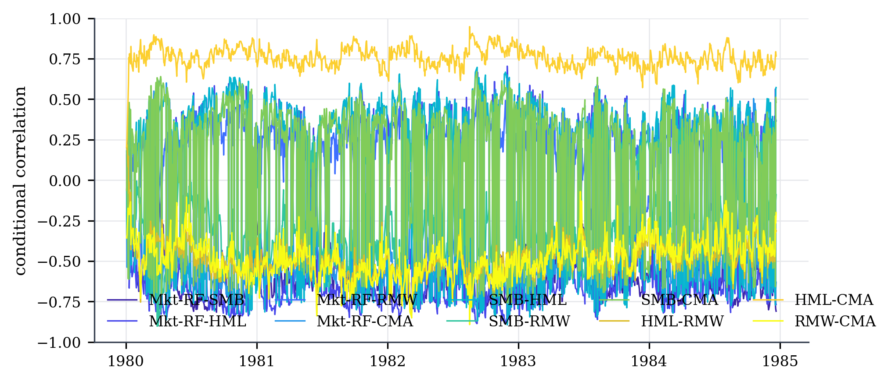
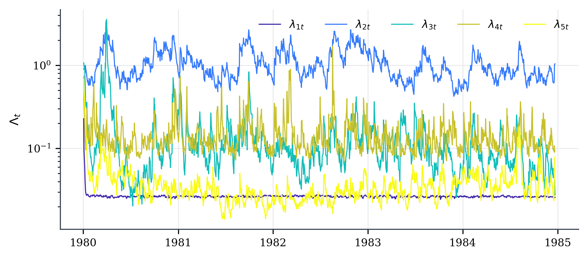
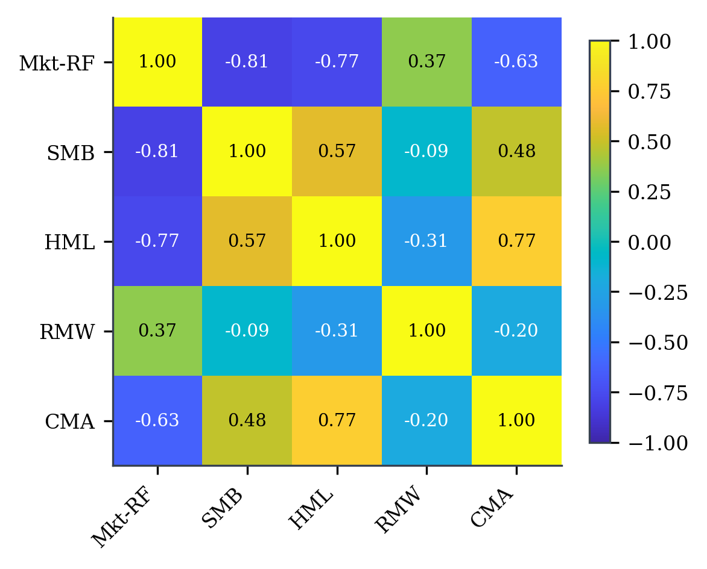
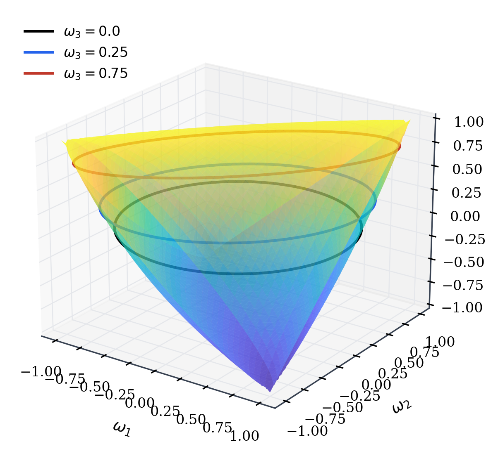
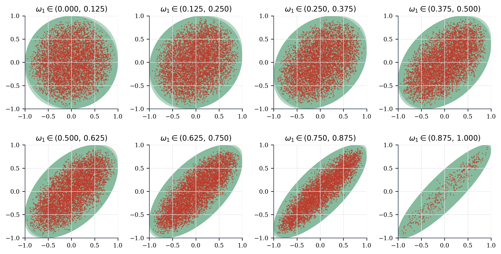
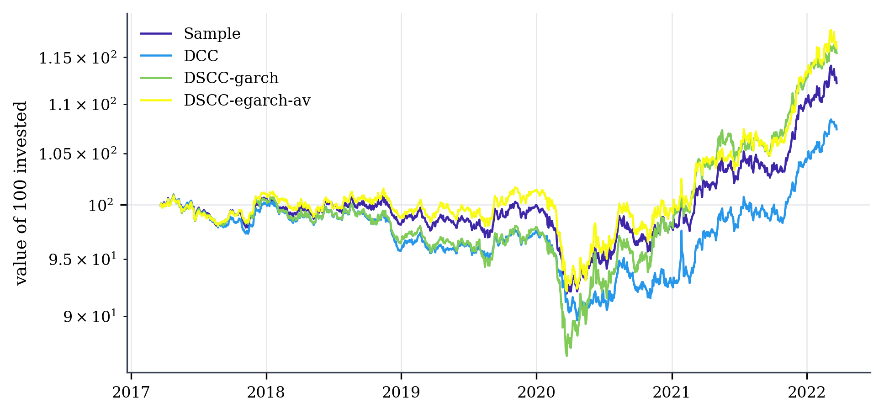

One package for the whole paper
Estimation
DSCC-λgarch and DSCC-λegarch by maximum likelihood (2.13), with in-sample δ̂t, multi-start optimisation and standard errors.
Forecasting
Multistep forecasts of ΣT+h (Section 4), including the "-av" variant, in the paper's form or exactly as in the authors' MATLAB code.
Span benchmark
Exact elliptope volumes, slice-by-slice convex-hull coverage and DCC simulation: Table 1 and Figures 1–3.
Portfolios
Minimum-variance backtests against DCC, the sample covariance and 1/N, with AV/SD/IR, turnover, HAC tests and Tables 2–6.
Install in one line
pip install dscc # core: numpy, scipy, pandas, matplotlib
pip install "dscc[fast]" # + numba, about 4x faster likelihood
pip install git+https://github.com/merwanroudane/dscc.git # development versionThe model
Explicit minimal representation
Abadir (2023, Prop. 2.1) shows that every positive-definite matrix can be written as
$$\Sigma_t = P^{\delta_t}\, e^{\Upsilon_t}\, \Lambda_t\, e^{-\Upsilon_t}\, P^{\delta_t},\qquad \Lambda_t=\mathrm{diag}(\lambda_{1t},\dots,\lambda_{kt}),\ \lambda_{it}>0,$$where \(\Upsilon_t\) is skew-symmetric with \(k(k-1)/2\) unrestricted elements, \(\delta_t\in\{0,1\}\), and \(P\) swaps the first two variates. The only constraints are the \(k\) signs \(\lambda_{it}>0\).
Dynamics
With \(z_t=e^{-\Upsilon_t}P^{\delta_t}x_t\), the eigenvalues follow a GARCH(1,1) (2.5) or an EGARCH(1,1) (2.6):
$$\Lambda_t=D_0+D_{11}\Lambda_{t-1}+D_{21}\,\mathrm{dg}(z_{t-1}z_{t-1}'),\qquad \log\Lambda_t=D_0+D_{11}\log\Lambda_{t-1}+D_{21}\,\mathrm{diag}\,g(\Lambda_{t-1}^{-1/2}z_{t-1})',$$with \(g_i(v)=|v_i-c_i|-a_i(v_i-c_i)\). The rotation is driven by the data through \(x_tx_t'=Q_t\,\mathrm{diag}(x_t'x_t,O)Q_t'\) and \(\Xi_t=\log Q_t\) (2.10)–(2.11):
$$\upsilon_{ijt}=(1-\alpha_{ij})\mu_{ij}+\alpha_{ij}\upsilon_{ij,t-1}+\beta_{ij}\xi_{ij,t-1}.\tag{2.9}$$Likelihood and correlations
$$\ell(\theta,\{\delta_t\})=\sum_{t=1}^{T}\Big(\log f_\varepsilon(\Sigma_t^{-1/2}x_t)-\tfrac12\sum_{i=1}^{k}\log\lambda_{it}\Big),\qquad \Omega_t=\mathrm{dg}(\Sigma_t)^{-1/2}\Sigma_t\,\mathrm{dg}(\Sigma_t)^{-1/2}.$$Each \(\delta_t\) maximises its own summand, which takes \(2T\) evaluations instead of \(2^T\). Forecasts weight the two \(\delta\)-branches by \(\hat\psi=\Pr(\delta=0)\) (Section 4).
The span benchmark
For \(k=3\), the elliptope \(E_3\) has volume \(V_3=\pi^2/2\) (3.2), and its section at a fixed correlation \(c\) has area \(\pi\sqrt{1-c^2}\). DSCC attains the full span by construction. Proposition 2.1 of [AR26] shows that DCC cannot.
Step → equation map
| Code | Paper | What it computes |
|---|---|---|
compose_sigma, decompose_sigma | [A23] Prop. 2.1; [AR26] (2.1) | Σ = PδeΥΛe−ΥPδ |
orthogonal_from_data, xi_from_data | (2.10)–(2.11) | Qt with |Qt| = +1 and ξt = vec(log Qt) |
_filters.ups_path, expm_skew_batch | (2.9); [A23] Lemma 2.1 | Υt and eΥt |
dsh_filter(dynamics="garch") | (2.4)–(2.5) | Λt, zt |
dsh_filter(dynamics="egarch"), g_abs | (2.6)–(2.7) | log Λt |
DSCC.loglike, DSCC.fit | (2.13); [A23] (3.11), (5.1) | likelihood, δ̂t, θ̂ |
DSCCResults.correlation | (2.14) | Ωt |
DSCCResults.forecast | Section 4, (4.1) | ΣT+h, h = 1…H |
elliptope.elliptope_volume, slice_coverage | (3.1)–(3.2), Table 1 | span benchmark |
portfolio.*, rolling_backtest | Section 5, (5.2)–(5.3) | Tables 2–6 |
Syntax reference
DSCC(data, dynamics="garch", demean=True, complement="householder", xi=None)
DSCC.fit(start=None, n_starts=1, seed=0, method="SLSQP", maxiter=500, se=True, polish=True)
DSCCResults.forecast(H=21, mode="paper", init="last")| Argument | Default | Meaning |
|---|---|---|
dynamics | "garch" | eigenvalue dynamics, (2.5) or (2.6)–(2.7) |
complement | "householder" | orthogonal complement Q2t in (2.10); irrelevant for k = 2 |
xi | None | precomputed ξt (2.11), e.g. the authors' MATLAB series |
n_starts | 1 | number of starts; §5.5 of the paper uses 10 |
se | True | profile-likelihood standard errors, δt fixed at its MLE |
mode | "paper" | "replication" reproduces the authors' forecast code |
init | "last" | "average" is the "-av" variant |
Results: .params .bse .pvalues .loglik .aic .bic .delta .psi .lam .ups .sigma() .correlation() .std_resid() .summary() .to_latex() .to_markdown() .plot_correlations() .plot_eigenvalues(). The full reference is in the README.
dscc.elliptope
elliptope_volume, ellipse_slice_area, slab_projection_area, simulate_dcc, slice_coverage, coverage_table
dscc.portfolio
gmv_weights, performance, turnover_leverage, hac_mean_test, pairwise_tests, covariance_summaries
Backtest and DCC
rolling_backtest, DSCCForecaster, DCCForecaster, SampleCovForecaster, EqualWeight, DCC
First estimate in 60 seconds
import dscc
ff = dscc.datasets.load_ff5_daily(end="2022-03-31") # downloaded once, then cached
data = ff[["Mkt-RF", "HML"]].iloc[-1000:]
res = dscc.DSCC(data, dynamics="egarch").fit(n_starts=3, seed=1)
print(res.summary())
fc = res.forecast(H=21, init="average")
print(dscc.gmv_weights(fc.mean_sigma))==============================================================================
Dynamic Spectral Conditional Correlation -- ML estimates
==============================================================================
Model: DSCC-egarch (2.6) Log-likelihood: -2508.149
Variables (k): 2 AIC: 5042.297
Observations (T): 1000 BIC: 5106.085
Q2t complement: householder Converged: yes
------------------------------------------------------------------------------
coef std err t P>|t| [0.025 0.975]
------------------------------------------------------------------------------
Eigenvalue dynamics, Lambda_t
D0[Mkt-RF] -0.2204 0.0562 -3.921 0.000 -0.331 -0.110 ***
D0[HML] -0.1563 0.0201 -7.793 0.000 -0.196 -0.117 ***
D11[Mkt-RF] 0.9609 0.0179 53.774 0.000 0.926 0.996 ***
D11[HML] 0.9786 0.0068 143.392 0.000 0.965 0.992 ***
D21[Mkt-RF] 0.2348 0.0512 4.586 0.000 0.134 0.335 ***
D21[HML] 0.1853 0.0237 7.813 0.000 0.139 0.232 ***
Skew-symmetric dynamics, Upsilon_t (2.9)
mu[Mkt-RF,HML] 1.6690 0.0134 124.989 0.000 1.643 1.695 ***
alpha[Mkt-RF,HML] 0.9293 0.0135 68.658 0.000 0.903 0.956 ***
beta[Mkt-RF,HML] -0.0201 0.0027 -7.441 0.000 -0.025 -0.015 ***
Asymmetry function g (2.7)
a[Mkt-RF] -0.2265 0.0959 -2.362 0.018 -0.414 -0.039 **
a[HML] 0.2479 0.1172 2.114 0.034 0.018 0.478 **
c[Mkt-RF] 0.0562 0.0321 1.751 0.080 -0.007 0.119 *
c[HML] 0.2140 0.1275 1.678 0.093 -0.036 0.464 *
------------------------------------------------------------------------------
Permutation component delta_t (Proposition 2.1, eq. 2.13)
share of t with delta_t = 1: 0.5095 psi = Pr(delta = 0): 0.4905
==============================================================================
Notes: *** p<0.01, ** p<0.05, * p<0.10. Standard errors from the numerical Hessian
of the profile log-likelihood with delta_t held at its MLE; '--' = not available
(parameter on a bound, or non-positive local curvature). Gaussian innovations.
Forecast correlation, average over the next 21 days: -0.471
Minimum-variance weights: [0.508 0.492]The paper on real data: the Fama–French five factors
This section reproduces the whole paper on the five daily Fama–French factors (Mkt-RF, SMB, HML, RMW, CMA), 2 January 1980 to 31 March 2022, in percent. These are the factors whose covariance matrix Abadir and Rockinger model with DSCC in Section 5. The source is the Kenneth R. French Data Library. Every number below was printed by examples/ff5_dscc_example.py.
Step 1 — estimate on the paper's first five-year window (1,260 days)
ff = dscc.datasets.load_ff5_daily(start="1980-01-02", end="2022-03-31")
factors = ff[["Mkt-RF", "SMB", "HML", "RMW", "CMA"]]
res = dscc.DSCC(factors.iloc[:1260], dynamics="egarch").fit()
print(res.summary())==============================================================================
Dynamic Spectral Conditional Correlation -- ML estimates
==============================================================================
Model: DSCC-egarch (2.6) Log-likelihood: -1802.333
Variables (k): 5 AIC: 3714.666
Observations (T): 1260 BIC: 3997.260
Q2t complement: householder Converged: yes
------------------------------------------------------------------------------
coef std err t P>|t| [0.025 0.975]
------------------------------------------------------------------------------
Eigenvalue dynamics, Lambda_t
D0[Mkt-RF] -1.4130 -- -- -- -- --
D0[SMB] -0.1600 0.0474 -3.380 0.001 -0.253 -0.067 ***
D0[HML] -0.3902 0.0510 -7.655 0.000 -0.490 -0.290 ***
D0[RMW] -0.8279 0.3021 -2.740 0.006 -1.420 -0.236 ***
D0[CMA] -0.5587 0.1974 -2.830 0.005 -0.946 -0.172 ***
D11[Mkt-RF] 0.6012 -- -- -- -- --
D11[SMB] 0.9664 0.0195 49.438 0.000 0.928 1.005 ***
D11[HML] 0.9571 0.0124 77.356 0.000 0.933 0.981 ***
D11[RMW] 0.7231 0.1342 5.387 0.000 0.460 0.986 ***
D11[CMA] 0.8927 0.0496 17.999 0.000 0.796 0.990 ***
D21[Mkt-RF] -0.1090 -- -- -- -- --
D21[SMB] 0.1947 0.0579 3.361 0.001 0.081 0.308 ***
D21[HML] 0.3699 0.0436 8.488 0.000 0.285 0.455 ***
D21[RMW] 0.3623 0.0826 4.386 0.000 0.200 0.524 ***
D21[CMA] 0.2518 0.0523 4.817 0.000 0.149 0.354 ***
Skew-symmetric dynamics, Upsilon_t (2.9)
mu[Mkt-RF,SMB] -0.5162 0.0225 -22.928 0.000 -0.560 -0.472 ***
mu[Mkt-RF,HML] -0.2744 0.0396 -6.929 0.000 -0.352 -0.197 ***
mu[Mkt-RF,RMW] -0.7496 0.0258 -29.049 0.000 -0.800 -0.699 ***
mu[Mkt-RF,CMA] -1.6047 0.0495 -32.409 0.000 -1.702 -1.508 ***
mu[SMB,HML] -0.9602 0.0199 -48.324 0.000 -0.999 -0.921 ***
mu[SMB,RMW] -0.0089 0.0256 -0.348 0.728 -0.059 0.041
mu[SMB,CMA] -0.8815 0.0279 -31.627 0.000 -0.936 -0.827 ***
mu[HML,RMW] -1.1548 0.0292 -39.580 0.000 -1.212 -1.098 ***
mu[HML,CMA] -0.9351 0.0249 -37.616 0.000 -0.984 -0.886 ***
mu[RMW,CMA] -0.3858 0.0350 -11.009 0.000 -0.455 -0.317 ***
alpha[Mkt-RF,SMB] -0.4623 0.2062 -2.242 0.025 -0.867 -0.058 **
alpha[Mkt-RF,HML] 0.0001 0.5820 0.000 1.000 -1.141 1.141
alpha[Mkt-RF,RMW] -0.4154 0.1784 -2.329 0.020 -0.765 -0.066 **
alpha[Mkt-RF,CMA] 0.6860 0.0434 15.821 0.000 0.601 0.771 ***
alpha[SMB,HML] -0.1210 1.0860 -0.111 0.911 -2.250 2.008
alpha[SMB,RMW] -0.9552 0.1851 -5.159 0.000 -1.318 -0.592 ***
alpha[SMB,CMA] -0.4706 0.3439 -1.369 0.171 -1.145 0.203
alpha[HML,RMW] 0.4461 0.7242 0.616 0.538 -0.973 1.866
alpha[HML,CMA] -0.8047 -- -- -- -- --
alpha[RMW,CMA] -0.3687 0.4410 -0.836 0.403 -1.233 0.496
beta[Mkt-RF,SMB] 0.0290 0.0149 1.953 0.051 -0.000 0.058 *
beta[Mkt-RF,HML] 0.0374 0.0378 0.990 0.322 -0.037 0.112
beta[Mkt-RF,RMW] 0.1659 0.0444 3.737 0.000 0.079 0.253 ***
beta[Mkt-RF,CMA] 0.0211 0.0034 6.281 0.000 0.015 0.028 ***
beta[SMB,HML] 0.5981 0.0000431997775654346.438 0.000 0.598 0.598 ***
beta[SMB,RMW] 2.7256 -- -- -- -- --
beta[SMB,CMA] -0.0088 0.0120 -0.731 0.465 -0.032 0.015
beta[HML,RMW] 3.2896 0.000010511909.543 0.000 3.290 3.290 ***
beta[HML,CMA] -0.0369 0.0094 -3.915 0.000 -0.055 -0.018 ***
beta[RMW,CMA] -0.0342 0.0579 -0.591 0.554 -0.148 0.079
Asymmetry function g (2.7)
a[Mkt-RF] -0.8588 -- -- -- -- --
a[SMB] -0.1531 0.0761 -2.013 0.044 -0.302 -0.004 **
a[HML] 0.0597 0.1054 0.566 0.571 -0.147 0.266
a[RMW] 0.3950 0.2334 1.692 0.091 -0.062 0.852 *
a[CMA] -0.1867 0.1373 -1.360 0.174 -0.456 0.082
c[Mkt-RF] 2.2843 1.4844 1.539 0.124 -0.625 5.194
c[SMB] -0.0722 0.0189 -3.812 0.000 -0.109 -0.035 ***
c[HML] -0.2639 0.1140 -2.315 0.021 -0.487 -0.041 **
c[RMW] -0.0768 0.2393 -0.321 0.748 -0.546 0.392
c[CMA] 0.2087 0.1375 1.517 0.129 -0.061 0.478
------------------------------------------------------------------------------
Permutation component delta_t (Proposition 2.1, eq. 2.13)
share of t with delta_t = 1: 0.2804 psi = Pr(delta = 0): 0.7196
==============================================================================
Notes: *** p<0.01, ** p<0.05, * p<0.10. Standard errors from the numerical Hessian
of the profile log-likelihood with delta_t held at its MLE; '--' = not available
(parameter on a bound, or non-positive local curvature). Gaussian innovations.DSCC-garch estimates as an HTML table
| Parameter | Estimate | Std. err. |
|---|---|---|
| D0[Mkt-RF] | 0.0001 | -- |
| D0[SMB] | 0.0298*** | (0.0088) |
| D0[HML] | 0.0102*** | (0.0029) |
| D0[RMW] | 0.0146*** | (0.0039) |
| D0[CMA] | 0.0003 | (0.0002) |
| D11[Mkt-RF] | 0.9849*** | (0.0021) |
| D11[SMB] | 0.9174*** | (0.0151) |
| D11[HML] | 0.7044*** | (0.0424) |
| D11[RMW] | 0.7243*** | (0.0471) |
| D11[CMA] | 0.9437*** | (0.0136) |
| D21[Mkt-RF] | 0.0108*** | (0.0008) |
| D21[SMB] | 0.0553*** | (0.0117) |
| D21[HML] | 0.2307*** | (0.0333) |
| D21[RMW] | 0.1790*** | (0.0308) |
| D21[CMA] | 0.0489*** | (0.0107) |
| mu[Mkt-RF,SMB] | -0.5006*** | (0.0215) |
| mu[Mkt-RF,HML] | -0.3587*** | (0.0337) |
| mu[Mkt-RF,RMW] | -0.7978*** | (0.0231) |
| mu[Mkt-RF,CMA] | -1.5503*** | (0.0458) |
| mu[SMB,HML] | -0.9970*** | (0.0177) |
| mu[SMB,RMW] | 0.0462* | (0.0251) |
| mu[SMB,CMA] | -0.8496*** | (0.0222) |
| mu[HML,RMW] | -1.1977*** | (0.0261) |
| mu[HML,CMA] | -0.9003*** | (0.0264) |
| mu[RMW,CMA] | -0.3279*** | (0.0336) |
| alpha[Mkt-RF,SMB] | -0.4531* | (0.2410) |
| alpha[Mkt-RF,HML] | -0.6873** | (0.2727) |
| alpha[Mkt-RF,RMW] | -0.3376* | (0.1837) |
| alpha[Mkt-RF,CMA] | 0.7651*** | (0.0556) |
| alpha[SMB,HML] | 0.5244*** | (0.0999) |
| alpha[SMB,RMW] | -0.9769*** | (0.0313) |
| alpha[SMB,CMA] | -0.4668 | (0.3458) |
| alpha[HML,RMW] | 0.9206*** | (0.0214) |
| alpha[HML,CMA] | -0.1560 | (0.1900) |
| alpha[RMW,CMA] | -0.4088 | (0.2909) |
| beta[Mkt-RF,SMB] | 0.0370** | (0.0156) |
| beta[Mkt-RF,HML] | 0.0056 | (0.0309) |
| beta[Mkt-RF,RMW] | 0.1769*** | (0.0460) |
| beta[Mkt-RF,CMA] | 0.0185*** | (0.0039) |
| beta[SMB,HML] | -0.0200 | -- |
| beta[SMB,RMW] | -0.0200 | -- |
| beta[SMB,CMA] | -0.0118 | (0.0121) |
| beta[HML,RMW] | -0.0200 | -- |
| beta[HML,CMA] | -0.0337 | (0.0255) |
| beta[RMW,CMA] | -0.0613 | (0.0565) |
DSCC-egarch estimates as an HTML table
| Parameter | Estimate | Std. err. |
|---|---|---|
| D0[Mkt-RF] | -1.4130 | -- |
| D0[SMB] | -0.1600*** | (0.0474) |
| D0[HML] | -0.3902*** | (0.0510) |
| D0[RMW] | -0.8279*** | (0.3021) |
| D0[CMA] | -0.5587*** | (0.1974) |
| D11[Mkt-RF] | 0.6012 | -- |
| D11[SMB] | 0.9664*** | (0.0195) |
| D11[HML] | 0.9571*** | (0.0124) |
| D11[RMW] | 0.7231*** | (0.1342) |
| D11[CMA] | 0.8927*** | (0.0496) |
| D21[Mkt-RF] | -0.1090 | -- |
| D21[SMB] | 0.1947*** | (0.0579) |
| D21[HML] | 0.3699*** | (0.0436) |
| D21[RMW] | 0.3623*** | (0.0826) |
| D21[CMA] | 0.2518*** | (0.0523) |
| mu[Mkt-RF,SMB] | -0.5162*** | (0.0225) |
| mu[Mkt-RF,HML] | -0.2744*** | (0.0396) |
| mu[Mkt-RF,RMW] | -0.7496*** | (0.0258) |
| mu[Mkt-RF,CMA] | -1.6047*** | (0.0495) |
| mu[SMB,HML] | -0.9602*** | (0.0199) |
| mu[SMB,RMW] | -0.0089 | (0.0256) |
| mu[SMB,CMA] | -0.8815*** | (0.0279) |
| mu[HML,RMW] | -1.1548*** | (0.0292) |
| mu[HML,CMA] | -0.9351*** | (0.0249) |
| mu[RMW,CMA] | -0.3858*** | (0.0350) |
| alpha[Mkt-RF,SMB] | -0.4623** | (0.2062) |
| alpha[Mkt-RF,HML] | 0.0001 | (0.5820) |
| alpha[Mkt-RF,RMW] | -0.4154** | (0.1784) |
| alpha[Mkt-RF,CMA] | 0.6860*** | (0.0434) |
| alpha[SMB,HML] | -0.1210 | (1.0860) |
| alpha[SMB,RMW] | -0.9552*** | (0.1851) |
| alpha[SMB,CMA] | -0.4706 | (0.3439) |
| alpha[HML,RMW] | 0.4461 | (0.7242) |
| alpha[HML,CMA] | -0.8047 | -- |
| alpha[RMW,CMA] | -0.3687 | (0.4410) |
| beta[Mkt-RF,SMB] | 0.0290* | (0.0149) |
| beta[Mkt-RF,HML] | 0.0374 | (0.0378) |
| beta[Mkt-RF,RMW] | 0.1659*** | (0.0444) |
| beta[Mkt-RF,CMA] | 0.0211*** | (0.0034) |
| beta[SMB,HML] | 0.5981*** | (0.0000) |
| beta[SMB,RMW] | 2.7256 | -- |
| beta[SMB,CMA] | -0.0088 | (0.0120) |
| beta[HML,RMW] | 3.2896*** | (0.0000) |
| beta[HML,CMA] | -0.0369*** | (0.0094) |
| beta[RMW,CMA] | -0.0342 | (0.0579) |
| a[Mkt-RF] | -0.8588 | -- |
| a[SMB] | -0.1531** | (0.0761) |
| a[HML] | 0.0597 | (0.1054) |
| a[RMW] | 0.3950* | (0.2334) |
| a[CMA] | -0.1867 | (0.1373) |
| c[Mkt-RF] | 2.2843 | (1.4844) |
| c[SMB] | -0.0722*** | (0.0189) |
| c[HML] | -0.2639** | (0.1140) |
| c[RMW] | -0.0768 | (0.2393) |
| c[CMA] | 0.2087 | (0.1375) |
Step 2 — conditional correlations, eigenvalues and the forecast
res.plot_correlations(); res.plot_eigenvalues()
fc = res.forecast(21, init="average")

21-day average forecast of the factor correlation matrix (DSCC-egarch-av):
Mkt-RF SMB HML RMW CMA
Mkt-RF 1.000 -0.532 -0.446 0.185 -0.318
SMB -0.532 1.000 -0.096 0.044 -0.079
HML -0.446 -0.096 1.000 -0.379 0.539
RMW 0.185 0.044 -0.379 1.000 -0.316
CMA -0.318 -0.079 0.539 -0.316 1.000
Step 3 — the span benchmark (Section 3)
from dscc import elliptope as el
el.elliptope_volume(3) # pi^2/2
el.coverage_table(T=400_000, innovations="iid", slice_on=0) # Table 1, authors' simulator
el.coverage_table(T=400_000, innovations="cdcc") # Aielli (2013), as described
Table 1 — DCC convex-hull surface per slice, authors' simulator (reproduces the paper's Table 1).
| Max cover | Equicorrelation rho=0.0 | Equicorrelation rho=0.3 | Equicorrelation rho=0.5 | Equicorrelation rho=0.7 | Toeplitz rho=0.5 | Toeplitz rho=0.75 | Toeplitz rho=0.95 | Uniform gamma=0.05 | Uniform gamma=0.1 | |
|---|---|---|---|---|---|---|---|---|---|---|
| (0.000, 0.125) | 3.14 | 2.77 | 2.76 | 2.77 | 2.79 | 2.80 | 2.78 | 2.77 | 2.77 | 2.76 |
| (0.125, 0.250) | 3.12 | 2.71 | 2.72 | 2.70 | 2.73 | 2.73 | 2.74 | 2.73 | 2.72 | 2.73 |
| (0.250, 0.375) | 3.04 | 2.64 | 2.64 | 2.64 | 2.63 | 2.67 | 2.64 | 2.63 | 2.61 | 2.63 |
| (0.375, 0.500) | 2.91 | 2.47 | 2.47 | 2.49 | 2.48 | 2.48 | 2.50 | 2.48 | 2.49 | 2.47 |
| (0.500, 0.625) | 2.72 | 2.27 | 2.30 | 2.30 | 2.28 | 2.24 | 2.28 | 2.24 | 2.28 | 2.26 |
| (0.625, 0.750) | 2.45 | 1.97 | 1.96 | 1.95 | 1.94 | 1.98 | 1.97 | 1.98 | 1.93 | 2.00 |
| (0.750, 0.875) | 2.08 | 1.58 | 1.59 | 1.54 | 1.57 | 1.57 | 1.55 | 1.61 | 1.54 | 1.54 |
| (0.875, 1.000) | 1.52 | 0.90 | 0.87 | 0.89 | 0.94 | 0.90 | 0.90 | 0.88 | 0.84 | 0.85 |
Table 1 — DCC convex-hull surface per slice, Aielli (2013) corrected DCC, the design the paper describes.
| Max cover | Equicorrelation rho=0.0 | Equicorrelation rho=0.3 | Equicorrelation rho=0.5 | Equicorrelation rho=0.7 | Toeplitz rho=0.5 | Toeplitz rho=0.75 | Toeplitz rho=0.95 | Uniform gamma=0.05 | Uniform gamma=0.1 | |
|---|---|---|---|---|---|---|---|---|---|---|
| (0.000, 0.125) | 3.14 | 2.99 | 2.95 | 2.95 | 2.68 | 2.89 | 2.78 | 1.96 | 2.98 | 2.98 |
| (0.125, 0.250) | 3.12 | 2.92 | 2.87 | 2.90 | 2.77 | 2.87 | 2.79 | 2.06 | 2.93 | 2.93 |
| (0.250, 0.375) | 3.04 | 2.83 | 2.80 | 2.85 | 2.67 | 2.80 | 2.74 | 2.14 | 2.81 | 2.82 |
| (0.375, 0.500) | 2.91 | 2.61 | 2.65 | 2.68 | 2.63 | 2.66 | 2.63 | 2.24 | 2.62 | 2.66 |
| (0.500, 0.625) | 2.72 | 2.43 | 2.44 | 2.50 | 2.43 | 2.49 | 2.50 | 2.16 | 2.44 | 2.44 |
| (0.625, 0.750) | 2.45 | 2.11 | 2.13 | 2.22 | 2.22 | 2.20 | 2.28 | 2.10 | 2.19 | 2.19 |
| (0.750, 0.875) | 2.08 | 1.73 | 1.81 | 1.81 | 1.87 | 1.82 | 1.92 | 1.86 | 1.74 | 1.75 |
| (0.875, 1.000) | 1.52 | 1.23 | 1.26 | 1.28 | 1.32 | 1.29 | 1.38 | 1.41 | 1.17 | 1.18 |

Step 4 — monthly minimum-variance backtest (Section 5)
fcs = [dscc.EqualWeight(), dscc.SampleCovForecaster(), dscc.DCCForecaster(),
dscc.DSCCForecaster("garch", init="last"),
dscc.DSCCForecaster("egarch", init="average")]
bt = dscc.rolling_backtest(factors, fcs, n_months=60)
bt.performance_table(); bt.pairwise(); bt.turnover_table(); bt.covariance_table()Table 2 — out-of-sample performance (annualised, percent)
| AV | SD | IR | |
|---|---|---|---|
| 1/N | 3.220 | 7.270 | 0.440 |
| Sample | 2.410 | 4.600 | 0.520 |
| DCC | 1.530 | 4.470 | 0.340 |
| DSCC-garch | 3.030 | 5.570 | 0.540 |
| DSCC-egarch-av | 3.100 | 5.010 | 0.620 |
Table 3 — one-sided HAC tests of monthly return differences
| Model 1 | Model 2 | alpha | t-ratio | p-value | lags |
|---|---|---|---|---|---|
| Sample | DCC | 0.001 | 1.505 | 0.069 | 3 |
| DSCC-garch | Sample | 0.001 | 0.670 | 0.253 | 3 |
| DSCC-egarch-av | Sample | 0.001 | 1.578 | 0.060 | 3 |
| DSCC-garch | DCC | 0.001 | 1.163 | 0.125 | 3 |
| DSCC-egarch-av | DCC | 0.001 | 2.050 | 0.022 | 3 |
| DSCC-egarch-av | DSCC-garch | 0.000 | 0.063 | 0.475 | 3 |
Table 4 — turnover and leverage
| TO | GL | PL | |
|---|---|---|---|
| 1/N | 0.020 | 1.000 | 0.000 |
| Sample | 0.030 | 1.120 | 0.100 |
| DCC | 0.240 | 1.150 | 0.120 |
| DSCC-garch | 0.200 | 1.000 | 0.010 |
| DSCC-egarch-av | 0.190 | 1.110 | 0.090 |
Tables 5-6 — covariance and correlation summaries
| v | Delta | d | kappa mean | kappa min | kappa max | |
|---|---|---|---|---|---|---|
| Sample | 0.410 | 0.154 | 0.778 | 4.823 | 3.795 | 6.157 |
| DCC | 0.565 | 0.249 | 0.820 | 6.176 | 3.002 | 11.834 |
| DSCC-garch | 0.475 | 0.105 | 0.436 | 3.955 | 1.445 | 9.590 |
| DSCC-egarch-av | 0.283 | 0.119 | 0.737 | 6.971 | 2.998 | 21.694 |
computing time per model (s): {'1/N': 0, 'Sample': 0, 'DCC': 49, 'DSCC-garch': 961, 'DSCC-egarch-av': 1330}

Interpreting the tables and figures
Estimates
- D0, D11, D21: level, persistence and news response of each eigenvalue.
- mu, alpha, beta: long-run angle (radians), persistence and data loading of each free rotation element. A high |alpha| means the correlation structure moves slowly.
- a, c: asymmetry of the EGARCH response.
- ψ̂: share of days on the unpermuted branch, used to weight the forecasts.
Evaluation
- Table 1: area reached by DCC in each slice, against the maximum allowed by positive definiteness.
- AV, SD, IR: annualised mean return, volatility and information ratio.
- TO, GL, PL: turnover, gross leverage, share of short positions.
- Pairwise tests: a small one-sided p-value means Model 1 earns more.
- Δ′, κ: distance of the correlations from zero, and conditioning of the matrix.
Checked against the paper and the authors' code
Every step was compared with the paper and with the authors' replication package (Zenodo). Where the two differ, dscc follows the paper by default and offers an option that reproduces the code.
| Point | Paper | Authors' code | dscc |
|---|---|---|---|
| Complement Q2t, k ≥ 3 | not specified | LAPACK's arbitrary null-space basis | deterministic Householder; xi= reproduces MATLAB |
| ξt, k = 2 | arcsin ([A23] 4.5) | principal log | principal log = atan2 (arcsin fails when x1 < 0) |
| Υ over the forecast horizon | iterated with (2.9) | frozen at ΥT | iterated; mode="replication" |
| DCC simulation, Table 1 | Aielli (2013) cDCC | iid innovations | cDCC; innovations="iid" |
| Holding period | buy-and-hold | weights reset daily | buy-and-hold; holding="constant" |
| Estimation of θ | MLE, 10 starts | θ loaded from thetaM.mat | fit: +43.9 log-likelihood points above the stored θ on window 1 |
- The general-k filter equals the bivariate closed form of [A23] to 10−13.
- V3 = π²/2 is exact.
- The DCC column ρ = 0.3 of Table 1 is reproduced to the second decimal.
- The numba and NumPy code paths give identical results.
Additions to the original method
Exact benchmark
slab_projection_area computes the true maximal area of each slice. It is larger than the paper's π√(1−lb²), so the DCC shortfall is larger than the paper reports.
General-k volume
vol(Ek) for any k, from the Lewandowski–Kurowicka–Joe (2009) normalising constant.
Standard errors
Profile-likelihood Wald inference with δt at its MLE, which the paper does not report.
Robust optimiser
Best-point tracking, a Powell polish and multi-start for a piecewise-smooth likelihood.
References
- Abadir, K. M. and M. Rockinger (2026). Dynamic spectral conditional correlations. Econometrics Journal. doi:10.1093/ectj/utag017
- Abadir, K. M. (2023). Explicit minimal representation of variance matrices, and its implication for dynamic volatility models. Econometrics Journal 26, 88–104. doi:10.1093/ectj/utac023
- Abadir, K. M. and M. Rockinger (2026). Replication package. Zenodo. doi:10.5281/zenodo.20817596
- Aielli, G. P. (2013). Dynamic conditional correlation: on properties and estimation. Journal of Business and Economic Statistics 31, 282–299.
- De Nard, G., O. Ledoit and M. Wolf (2021). Factor models for portfolio selection in large dimensions. Journal of Financial Econometrics 19, 236–257.
- Engle, R. F. (2002). Dynamic conditional correlation. Journal of Business and Economic Statistics 20, 339–350. doi:10.1198/073500102288618487
- Lewandowski, D., D. Kurowicka and H. Joe (2009). Generating random correlation matrices based on vines and extended onion method. Journal of Multivariate Analysis 100, 1989–2001. doi:10.1016/j.jmva.2009.04.008
- Newey, W. K. and K. D. West (1987). A simple, positive semi-definite, heteroskedasticity and autocorrelation consistent covariance matrix. Econometrica 55, 703–708. doi:10.2307/1913610